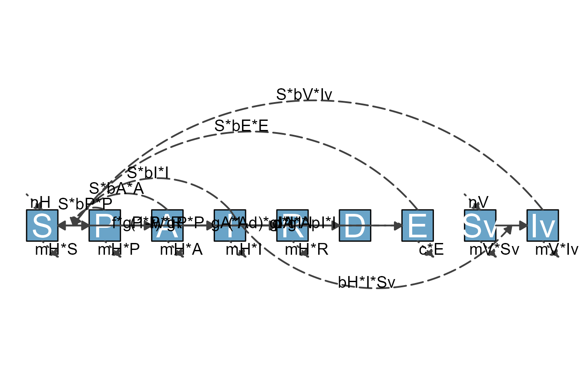

Overview
In this vignette, we discuss a few additional topics that might be of interest to some, but likely not all users.
Using modelbuilder models with flowdiagramr
The developers of flowdiagramr have also been developing an R package called modelbuilder which allows users to graphically build and analyze compartmental simulation models. In fact, flowdiagramr started as a function inside modelbuilder to draw diagrams of user-built models. At some point, we decided to make flowdiagramr a stand-alone package. But it still works with and is used by modelbuilder. If you use modelbuilder and want to use flowdiagramr to generate a diagram for that model outside the auto-generated one shown inside modelbuilder, here are the steps.
Model conversion
Once you built a model with modelbuilder, you can
save it as an Rds file. This file contains a single object,
the user-created model specified as a list object. Since
modelbuilder models and flowdiagramr
models are slightly different, we provide a convenience function that
converts one format into the other.
This is a very simple process, and is done with the function
convert_from_modelbuilder. This function takes as input the
modelbuilder object and produces a list that conforms
to the flowdiagramr model specification. The following
examples illustrate this.
Example 1
Assume you built a basic SIR model with modelbuilder
and saved it as an R object inside an .Rds
file. First, we load the file and assign it to some variable.
mbmodel <- readRDS('SIR_model.Rds')Next, we convert the object.
mymodel <- convert_from_modelbuilder(mbmodel)If you print the content, you can see it has the required
model_list with the variables and
flows objects. You can now use this model_list
object when you call prepare_diagram().
print(mymodel)
#> $variables
#> [1] "S" "I" "R"
#>
#> $flows
#> $flows$S_flows
#> [1] "-b*S*I"
#>
#> $flows$I_flows
#> [1] "+b*S*I" "-g*I"
#>
#> $flows$R_flows
#> [1] "+g*I"You can now proceed with the usual steps.
diagram_list <- prepare_diagram(model_list = mymodel)
sir_diagram <- make_diagram(diagram_list)
plot(sir_diagram)
Example 2
Just to show one more example, this is a model from the
modelbuilder example library called
Complex ID control. It is a model that includes a good
number of details and allows exploration of different intervention
strategies. If you are not too familiar with compartmental models yet,
just consider it as an example that illustrates the work flow. You can
find some more details about the model in the modelbuilder
package, or even more details in another of our packages, DSAIDE, which is targeted
toward learning about such infectious disease models.
First, we load the model, then convert it and print it.
mbmodel <- readRDS('Complex_ID_Control.Rds')
mymodel <- convert_from_modelbuilder(mbmodel)
print(mymodel)
#> $variables
#> [1] "S" "P" "A" "I" "R" "D" "E" "Sv" "Iv"
#>
#> $flows
#> $flows$S_flows
#> [1] "+nH" "-S*bP*P" "-S*bA*A" "-S*bI*I" "-S*bE*E" "-S*bV*Iv" "+w*R"
#> [8] "-mH*S"
#>
#> $flows$P_flows
#> [1] "+S*bP*P" "+S*bA*A" "+S*bI*I" "+S*bE*E" "+S*bV*Iv"
#> [6] "-f*gP*P" "-(1-f)*gP*P" "-mH*P"
#>
#> $flows$A_flows
#> [1] "+f*gP*P" "-gA*A" "-mH*A"
#>
#> $flows$I_flows
#> [1] "+(1-f)*gP*P" "-(1-d)*gI*I" "-d*gI*I" "-mH*I"
#>
#> $flows$R_flows
#> [1] "+gA*A" "+(1-d)*gI*I" "-w*R" "-mH*R"
#>
#> $flows$D_flows
#> [1] "+d*gI*I"
#>
#> $flows$E_flows
#> [1] "+pI*I" "+pA*A" "-c*E"
#>
#> $flows$Sv_flows
#> [1] "+nV" "-bH*I*Sv" "-mV*Sv"
#>
#> $flows$Iv_flows
#> [1] "+bH*I*Sv" "-mV*Iv"As promised, this is a much more complex model. We don’t expect the default diagram for this model to look great, but let’s give it a try.
diagram_list <- prepare_diagram(mymodel)
my_diagram <- make_diagram(diagram_list)
plot(my_diagram)
The diagram is not ideal. But you now know how to make it better,
once you have done the model conversion, you can use the usual
approaches. As an example, let’s specify the layout for the
variables/nodes. We can use the existing model_settings
object stored in mymodel and can add
varlocations.
The rationale of how to place the variables is determined by the meaning of each of them and what makes logical sense. I’m not discussing this here, if you want to learn more about the model, see the Complex Control Scenarios app inside DSAIDE.
varlocations = matrix(data = c("","E","","",
"", "", "A", "R",
"S", "P", "", "",
"", "", "I", "D",
"", "Sv", "Iv", ""), nrow = 5, byrow = TRUE)
model_settings = list(varlocations = varlocations)
diagram_list <- prepare_diagram(mymodel, model_settings)
my_diagram <- make_diagram(diagram_list)
plot(my_diagram)This is better, but of course still not quite good enough. Fortunately, you have learned how to use flowdiagramr to fairly easily turn this into a publication-quality diagram üòÑ.
Cropping white-space from diagram plots
It is quite likely that the diagram you get back from
make_diagram contains a good bit of white space. This is
often a problem when trying to use the figure in publications.
As example, consider the above diagram. If we write it into a file, then load the file and show it, it looks like this.
ggplot2::ggsave("sirdiag.png",sir_diagram)
knitr::include_graphics('sirdiag.png')
As you can see, the saved image file contains a lot of unwanted white space. There are different options you can use to change the white space. Here are some we are aware of.
Set margins in ggplot2
One approach is to play with the margins of the gpplot object
returned from make_diagram until things look ok. Here is an
example:
#shrink top and bottom margins
diag_new <- sir_diagram + ggplot2::theme(plot.margin = ggplot2::unit(c(-7,0,-7,0), "in"))
ggplot2::ggsave("sirdiag_new.png",diag_new)
knitr::include_graphics('sirdiag_new.png')
This looks better. You will likely have to fiddle a bit with the margin settings until you get it cropped the way you want.
Use the magick package
The magick package allows for automated trimming of a
file. This means you first need to save your diagram into a file, then
load, trim and resave. Here is an example
library(magick)
fig <- magick::image_read("sirdiag.png")
fig2 <- magick::image_trim(fig)
magick::image_write(fig2,'sirdiag2.png')
knitr::include_graphics('sirdiag2.png')The disadvantages of this approach is that you need to use another R
package and that the cropping is very tight. The advantages are that the
magick package can do a lot more, so there might be some
additional useful tweaks possible that you can apply to your figure to
get it exactly the way you want.
Using flowdiagramr` helper functions
By now, you are familiar with the main functions of
flowdiagramr, namely prepare_diagram(),
update_diagram(), make_diagram() and
write_diagram(), as well as the add_flow()
function. The package contains additional helper functions. Those are
generally not very useful by themselves and do work behind the scenes.
However, a few might be occasionally useful, therefore we describe them
briefly.
check_model_list()- This function does what its name implies. It takes a model list, consisting of thevariablesandflowsentry and checks if everything seems to make sense. If everything is fine, nothing is returned. Otherwise, a hopefully somewhat informative error message is provided.check_model_settings()- This function also does what its name implies üòÅ. It checks that the optionalmodel_settingslist one can supply toprepare_diagram()is correct.check_dataframes()- this function takes the diagram list one gets after runningprepare_diagram()and checks to make sure thevariablesandflowsdata frames are correct.
These checking functions are run behind the scenes as part of the the main functions. You will rarely need to call them directly, but we want to mention them just in case you find them useful.